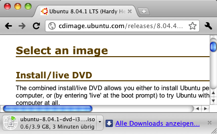
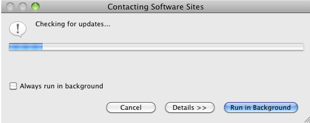

| Usability Pattern | Ausführung im Hintergrund |
|---|---|
| Alias | Background Task |
| Problem | Benutzer möchten nicht auf die Ausführung einer langdauernden Aktion warten, sondern währenddessen weiter mit dem System arbeiten. |
| Lösung |
Biete Benutzern an, langdauernde Aktionen im Hintergrund auszuführen. Lasse Benutzer während der Ausführung der Aktion weiter mit dem System arbeiten und andere Aktionen ausführen. Zeige dabei aber stets an, dass eine Aktion im Hintergrund ausgeführt wird. Benutzer sollten die Möglichkeit haben, den Status und Fortschritt der Ausführung zu erkennen. Benachrichtige Benutzer, wenn die Ausführung abgeschlossen oder eine Eingabe notwendig ist. |
| Illustration | Benutzer können mit einem Web-Browser u. a. Dateien herunterladen und speichern. Ein solcher Download kann, abhängig von der Dateigröße, längere Zeit dauern und wird deshalb im Hintergrund ausgeführt. Benutzer können mit dem Web-Browser weiter im Web surfen und müssen nicht den Abschluss des Downloads abwarten. Der Fortschritt des Downloads wird in der Statuszeile des Browser-Fensters dargestellt; ein eingeblendeter Hinweis informiert Benutzer über den erfolgreichen Abschluss des Downloads. |
| Beispiele |
Google Chrome 8.0 (Mac OS X): Download von Dateien Der Web-Browser Chrome führt Downloads im Hintergrund aus. Aktive Downloads werden in einer Statuszeile am unteren Rand des Browser-Fensters angezeigt; Benutzer können dort u. a. den Fortschritt und die verbleibende Dauer des Downloads erkennen und z. B. auch über ein Menü den Download abbrechen.  Download im Hintergrund in Chrome Eclipse IDE: Update-Prüfung im Hintergrund Die Entwicklungsumgebung Eclipse erlaubt Benutzern, die Suche nach Software-Aktualisierungen im Hintergrund auszuführen und währenddessen weiter mit dem System zu arbeiten. Da die Update-Prüfung häufig längere Zeit in Anspruch nimmt, bedeutet dies für Benutzer einen erheblichen Komfortgewinn. Der Screenshot zeigt den Dialog, in dem Benutzer die Hintergrundausführung starten können. Zusätzlich können Benutzer auch angeben, zukünftige Update-Prüfungen standardmäßig im Hintergrund durchzuführen.  Update-Prüfung im Hintergrund in Eclipse |
| Nutzungskontext |
|
| Begründung | Die Ausführung langdauernder Aktionen im Hintergrund erlaubt Benutzern ein effizienteres Arbeiten mit dem System: Benutzer müssen nicht auf das Ende der Ausführung warten, sondern können parallel weiter mit dem System arbeiten. |
| Risiken, Nachteile, Kosten | Die Ausführung einer Aktion im Hintergrund unterbricht in vielen Fällen eine Dialoginteraktion zwischen Benutzer und System: das System erwartet zunächst keine weitere Eingabe des Benutzers, sondern führt für längere Zeit einen Verarbeitungsschritt aus. Für Benutzer muss deshalb leicht erkennbar sein, dass die gewünschte Aktion tatsächlich im Hintergrund ausgeführt wird. Gleiches gilt, wenn der Verarbeitungsschritt abgeschlossen wurde; auch in diesem Fall müssen Benutzer gut sichtbar und verständlich informiert werden, damit sie nicht länger als notwendig auf die Ausführung der Aktion warten. |
| Zusammenspiel |
Ergänzung Abbruch Abbruch von Aktionen, die im Hintergrund ausgeführt werden. Ergänzung Fortschrittsanzeige Der Fortschritt von im Hintergrund ausgeführten Aktionen kann durch eine Fortschrittsanzeige angezeigt werden. Benutzer erhalten so auch einen Hinweis darauf, dass die Hintergrundaktion noch aktiv ist. Ergänzung Verarbeitungsanzeige Falls der Fortschritt der im Hintergrund ausgeführten Aktion nicht dargestellt werden kann, sollten Benutzer zumindest mit einer Verarbeitungsanzeige darüber informiert werden, dass aktuell im Hintergrund noch eine Aktion ausgeführt wird. |
| Anforderungserhebung |
Identifiziere Aktionen, für deren Ausführung das System längere Zeit benötigt.
Überlege, wie das System Benutzer über im Hintergrund ausgeführte Aktionen informieren soll.
|
| Anforderungsspezifikation |
Spezifiziere globale Vorgaben für den Einsatz des Usability Patterns „ Ausführung im Hintergrund “:
Spezifiziere, für welche Interaktionen das Usability Pattern „ Ausführung im Hintergrund “ eingesetzt wird. Annotiere und ergänze dazu vorhandene Use Cases :
|
{kind=link}
{kind=link}